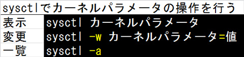
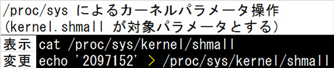
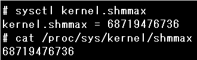
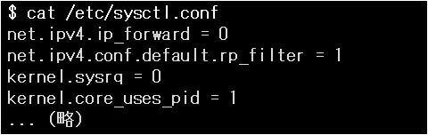

- 問題ID : 21999 カーネル実行時における管理とトラブルシューティング
- 履歴
正解
sysctl kernel.shmmax
cat /proc/sys/kernel/shmmax
解説
カーネルパラメータ kernel.shmmax には、共有メモリセグメントの最大サイズ（バイト）が設定されています。共有メモリセグメントとは複数のプロセス間で共有できるメモリ領域です。
カーネルパラメータを参照する方法には、sysctl コマンドを使う方法と、/proc/sys 以下の仮想ファイルを参照する方法があります。
sysctl コマンドは以下のように使います。

(-w オプションをつけなくても変更が行える環境もあります）
仮想ファイルを使ってカーネルパラメータの操作を行う方法は以下のようになります。

よって、値を参照するコマンドの正解は
・sysctl kernel.shmmax
・cat /proc/sys/kernel/shmmax
です。
以下は実行例です。

その他の選択肢は以下のとおりです。
・echo /proc/sys/kernel/shmmax
「/proc/sys/kernel/shmmax」という文字列が表示されるので、誤りです。
例）
# echo /proc/sys/kernel/shmmax
/proc/sys/kernel/shmmax
・sysctl -w kernel.shmmax
-wオプションは値を変更するオプションなので、誤りです。
例）
# sysctl -w kernel.shmmax
error: "kernel.shmmax" must be of the form name=value
・cat /proc/sys/kernel.shmmax
/proc/sys 以下のファイルを使って参照する場合は、カーネルパラメータ名のドット (.）をスラッシュに置き換えなければならないので、誤りです。
例）
# cat /proc/sys/kernel.shmmax
cat: /proc/sys/kernel.shmmax: そのようなファイルやディレクトリはありません
参考
カーネルパラメータは、カーネルの動作や細かな設定値を参照・変更するための仕組みです。
基本的にはユーザが個別に設定を行わなくても自動で適切な設定が行われていますが、任意の値を設定することもできます。
設定を実行時に参照・変更する方法としては大きく二種類、sysctlコマンドを使う方法と、/proc/sys 以下に存在するカーネルパラメータを操作するための仮想ファイルに対して読み書きを行う方法があります。
ビルド時に行うカーネルコンフィギュレーションとは異なり、（一部の例外項目を除いて）実行中に設定を変更することができ、設定内容は即座に反映されます。
sysctl コマンドは以下のように使います。
(-w オプションをつけなくても変更が行える環境もあります）
一方仮想ファイルを使ってカーネルパラメータの操作を行う方法は以下のようになります。
上記2つの方法は結果的に同じで、いずれも/proc/sys以下の値を一時的に置き換えます。
sysctlでの「.」が「/」に置き換えられた形式であることに注意しましょう。
なお、この2つの方法で設定した場合は、再起動時に設定が失われてしまいます。
恒
久的に（再起動後も）設定を有効にするためには、起動時に自動実行されるスクリプトを編集し、起動毎に設定したい値を変更する sysctl
コマンドを実行するようにするか、/etc/sysctl.conf または /etc/sysctl.d
ディレクトリ配下の設定ファイルに設定を記述します。/etc/sysctl.d ディレクトリは、目的別に設定ファイルを分ける際などに使用します。
